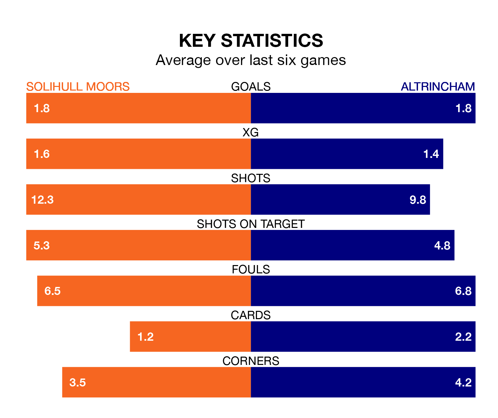

Solihull Moors host Altrincham on Saturday at the ARMCO Arena in National League.
In their last league match, on Tuesday, Solihull Moors drew with Dagenham and Redbridge 1-1 at home, with their goal scored by Josh Kelly.
Altrincham won, 4-0 at home against Eastleigh on January 27, with Alex Newby, Christopher Conn, Lewis Banks and Regan Linney on the scoresheet.
With 53 goals in 28 games so far this season, Altrincham are scoring more than average in the league with 1.9 goals per game. And they are conceding fewer than average, letting in 38 goals at a rate of 1.4 per game.
Solihull Moors are also above average scorers, with 1.6 goals per game, compared to a league average of 1.5. They have conceded 1.4 goals per game.
In the last 10 years, Solihull Moors and Altrincham have played each other on eight occasions. Solihull Moors won five of them and Altrincham three.
On average, the Moors scored 2.5 goals and Robins 1.6 in those matches.
Their last meeting was on November 25, when Altrincham won 6-1 at home.
The Moors are fourth in the table after 29 games, of which they have won 13 and drawn eight, earning 47 points.
Robins are one place behind the home team in fifth, with 12 wins and 10 draws putting them on 46 points.
Solihull Moors are in mixed form in National League, with three wins and a draw from their last six games.
With two wins and two draws over that period, the visitors' form is slightly worse – they have taken eight points from 18, compared to Solihull Moors's 10.
Updated: 10:40 (UTC), 01/02/24